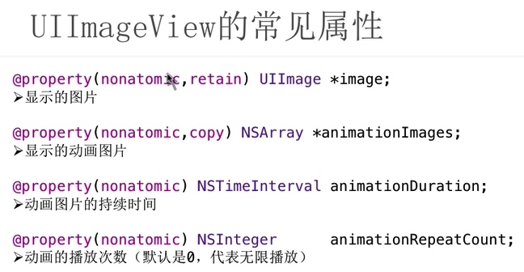

UILable常见属性
@property(nonatomic, copy) NSString *text;
* 显示文字
@property(nonatomic, retain) UIFont *font;
* 显示字体
@property(nonatomic, retain) UIColor *textColor;
* 文字颜色
@property(nonatomic) NSTextAlignment textAlignment;
* 对齐模式(左对齐，居中对齐， 右对齐)
@property(nonatomic) NSInteger numberOfLines;
*文字行数
property(nonatomic) NSLineBreakMode lineBreakMode;
* 换行模式
- (void)viewDidLoad {
[super viewDidLoad];
// Do any additional setup after loading the view, typically from a nib.
UILabel *lable = [[UILabel alloc] init];
lable.frame = CGRectMake(50, 300, 300, 200);
lable.backgroundColor = [UIColor redColor];
lable.text = @"你这头猪";
lable.textAlignment = NSTextAlignmentCenter;
lable.font = [UIFont systemFontOfSize:20.f];
lable.font = [UIFont boldSystemFontOfSize:20.f];
lable.textColor = [UIColor purpleColor];
lable.shadowOffset = CGSizeMake(4, -10);
lable.shadowColor = [UIColor blueColor];
lable.lineBreakMode = NSLineBreakByClipping;
[self.view addSubview:lable];
}
UIImageView

毛玻璃效果
- (void)viewDidLoad {
[super viewDidLoad];
// Do any additional setup after loading the view, typically from a nib.
UIImageView *imageView = [[UIImageView alloc] init];
imageView.backgroundColor = [UIColor redColor];
imageView.frame = self.view.bounds;
imageView.image = [UIImage imageNamed:@"IMG_2585"];
imageView.contentMode = UIViewContentModeScaleAspectFill;
UIToolbar *toolBar = [[UIToolbar alloc] init];
toolBar.frame = imageView.bounds;
toolBar.barStyle = UIBarStyleBlack;
toolBar.alpha = 0.85;
[imageView addSubview:toolBar];
[self.view addSubview:imageView];
}
四种设置UIImage尺寸的方法
- (void)viewDidLoad {
[super viewDidLoad];
// Do any additional setup after loading the view, typically from a nib.
UIImageView *imageView = [[UIImageView alloc] init];
//第一种方式
imageView.frame = CGRectMake(100, 100, 200, 200);
imageView.backgroundColor = [UIColor purpleColor];
imageView.image = [UIImage imageNamed:@"1"];
imageView.contentMode = UIViewContentModeScaleAspectFill;
//第二种方式
UIImage *image = [UIImage imageNamed:@"1"];
imageView.frame = CGRectMake(0, 0, image.size.width, image.size.height);
imageView.backgroundColor = [UIColor purpleColor];
imageView.image = image;
//第三种方式
UIImageView *imageView = [[UIImageView alloc] initWithImage:[UIImage imageNamed:@"1"]];
imageView.center = CGPointMake(100, 300);
//第四种方式
UIImageView *imageView = [[UIImageView alloc] initWithFrame:(CGRectMake(100, 100, 200, 200))];
UIImage *image = [UIImage imageNamed:@"1"];
imageView.image = image;
[self.view addSubview:imageView];
}